Pictorial cancels in Ontario
We have recorded 67 pictorial cancels in this province. 53 are still in use and can be requested from the post office, in person or by mail.
In use (53)
 Almonte POBirthplace of / Ville natale de James Naismith / Inventor of / Inventeur de BasketballActive · 2022–2033
Almonte POBirthplace of / Ville natale de James Naismith / Inventor of / Inventeur de BasketballActive · 2022–2033 Barry's Bay PONewActive · ?–present
Barry's Bay PONewActive · ?–present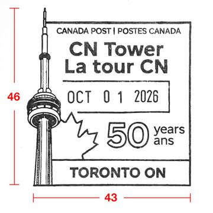
Bay and Gerrard POCN Tower / La tour CNActive · 2026–present Beachville POBaseballActive · ?–?
Beachville POBaseballActive · ?–? Beachville POPost officeActive · ?–?
Beachville POPost officeActive · ?–? Beeton PO2026Active · 2026–2036
Beeton PO2026Active · 2026–2036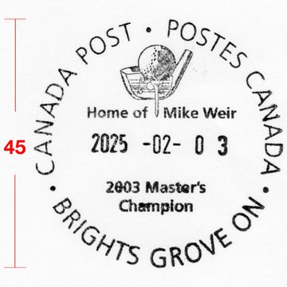
Bright's Grove POHome of Mike Weir / 2003 Master's ChampionActive · 2017–2028 Burford POBuilt 1916 / EST. 1819Active · ?–present
Burford POBuilt 1916 / EST. 1819Active · ?–present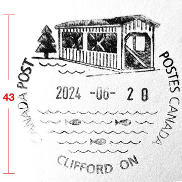
Clifford POBridgeActive · 2017–2026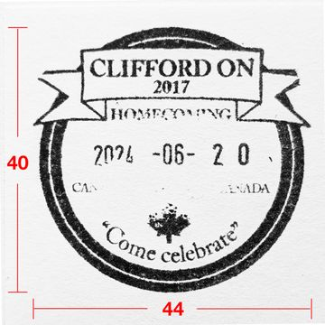
Clifford POHomecomingActive · 2017–2026 Crystal Beach POThe Comet / 1948 - 1989Active · ?–present
Crystal Beach POThe Comet / 1948 - 1989Active · ?–present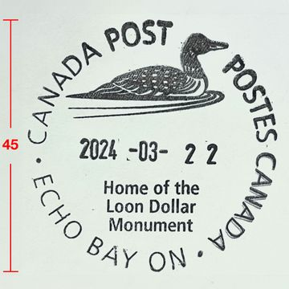
Echo Bay POHome of the Loon Dollar MonumentActive · 2017–2028 Gravenhurst STN MainNewActive · ?–present
Gravenhurst STN MainNewActive · ?–present Hagersville POFARMERS MARKET / EST 1897Active · 2025–present
Hagersville POFARMERS MARKET / EST 1897Active · 2025–present Havelock POHome of the Havelock Country JamboreeActive · ?–present
Havelock POHome of the Havelock Country JamboreeActive · ?–present Ingersoll STN MainINGERSOLL CHEESE MUSEUMActive · ?–present
Ingersoll STN MainINGERSOLL CHEESE MUSEUMActive · ?–present Jarvis POJarvis Train StationActive · ?–present
Jarvis POJarvis Train StationActive · ?–present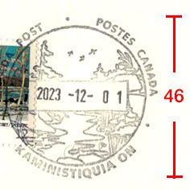
Kaministiquia POForestActive · 2021–present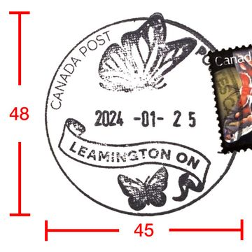
LeamingtonButterfliesActive · 2022–present London STN BRCVersion 2Active · ?–present
London STN BRCVersion 2Active · ?–present London STN BRCLogoActive · ?–present
London STN BRCLogoActive · ?–present Major Mackenzie POOBSERVATOIRE DAVID DUNLAP OBSERVATORYActive · 2022–present
Major Mackenzie POOBSERVATOIRE DAVID DUNLAP OBSERVATORYActive · 2022–present Moonbeam POUFO monumentActive · ?–present
Moonbeam POUFO monumentActive · ?–present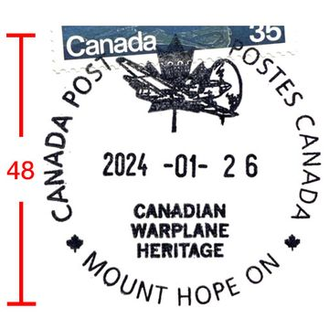
Mount Hope POAircraft, maple leaf shapeActive · 2022–present New Hamburg POWaterwheel / Roue à eauActive · 2024–present
New Hamburg POWaterwheel / Roue à eauActive · 2024–present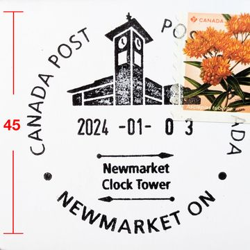
Newmarket STN MainNewmarket Clock TowerActive · 2022–present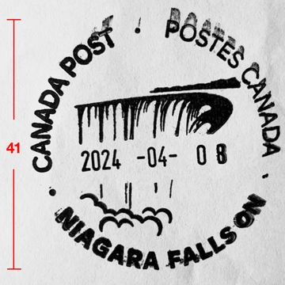
Niagara Falls PONiagara FallsActive · 2024–2035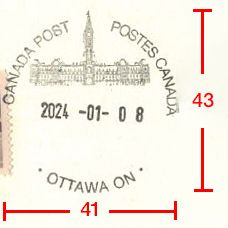
Ottawa Postal Station BParliament (new)Active · ?–present Otterville POOtterville Mill Established 1845Active · ?–present
Otterville POOtterville Mill Established 1845Active · ?–present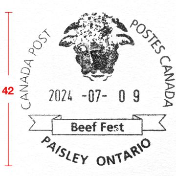
Paisley POBeef FestActive · 2017–2028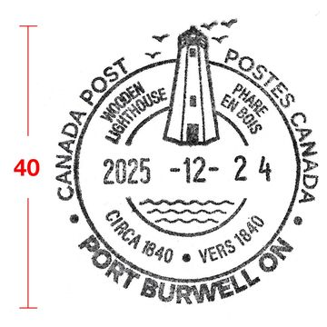
Port Burwell PONewActive · ?–present Port Burwell POOldActive · ?–present
Port Burwell POOldActive · ?–present Port Rowan POBirdActive · 2023–2034
Port Rowan POBirdActive · 2023–2034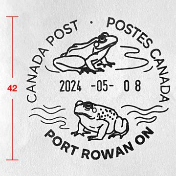
Port Rowan POFrogActive · 2024–2035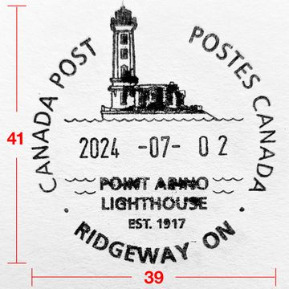
Ridgeway POLighthouseActive · 2025–present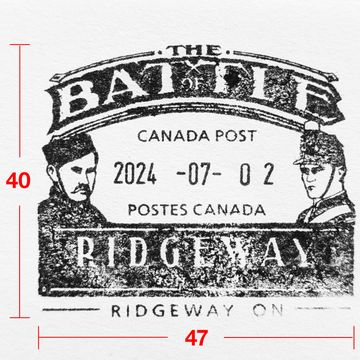
Ridgeway POBattleActive · 2025–present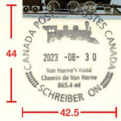
Schreiber POVan Horne's Road / Chemin de Van Horne / 865.4 miActive · 2020–present Simcoe POWar Memorial Carillon TowerActive · 2024–present
Simcoe POWar Memorial Carillon TowerActive · 2024–present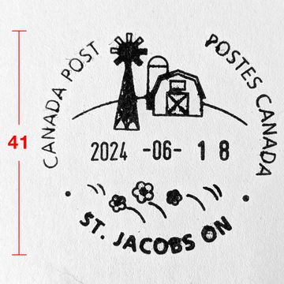
St. Jacobs POWindmill, farm, flowersActive · ?–present Stratford Main POBirdActive · 2021–2032
Stratford Main POBirdActive · 2021–2032 Thornbury POBLUE MOUNTAIN POTTERY / 1953-2004Active · 2022–present
Thornbury POBLUE MOUNTAIN POTTERY / 1953-2004Active · 2022–present Thorndale POPRICKLY VALLEY Train FestivalActive · 2021–present
Thorndale POPRICKLY VALLEY Train FestivalActive · 2021–present Tillsonburg Main POOtterActive · ?–present
Tillsonburg Main POOtterActive · ?–present Tillsonburg Main PORotaryActive · 2022–present
Tillsonburg Main PORotaryActive · 2022–present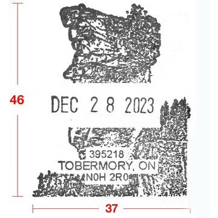
Tobermory PODolomite sea stacks shaped by erosion on Flowerpot IslandActive · ?–present Toronto Station KVersion 2Active · 2026–present
Toronto Station KVersion 2Active · 2026–present Tottenham POTrain, flower, grassActive · 2023–present
Tottenham POTrain, flower, grassActive · 2023–present Town of York POToronto's First Post OfficeActive · ?–present
Town of York POToronto's First Post OfficeActive · ?–present Waterford POBLACK BRIDGE / WATERFORD HERITAGE TRAILActive · ?–present
Waterford POBLACK BRIDGE / WATERFORD HERITAGE TRAILActive · ?–present Wawa POWawa Goose MonumentActive · 2022–2033
Wawa POWawa Goose MonumentActive · 2022–2033 Wellesley POWellesley Apple Butter & Cheese Festival / Est. 1975Active · ?–present
Wellesley POWellesley Apple Butter & Cheese Festival / Est. 1975Active · ?–present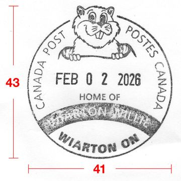
Wiarton PO2nd WillieActive · 2020–2031 Winona POHome of the Peach FestivalActive · ?–present
Winona POHome of the Peach FestivalActive · ?–present
Retired (14)
 Barry's Bay POOldExpired · ?–?
Barry's Bay POOldExpired · ?–? Beeton PO2002Expired · 2002–?
Beeton PO2002Expired · 2002–?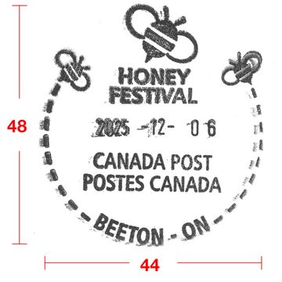
Beeton PO2014Expired · 2014–2025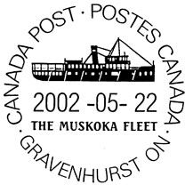
Gravenhurst STN MainOldExpired · 2002–? London STN BRCVersion 1Expired · ?–?
London STN BRCVersion 1Expired · ?–? Orleans Gardens POJeanne dExpired · ?–2024
Orleans Gardens POJeanne dExpired · ?–2024 Ottawa Postal Station BParliament (old)Expired · ?–?
Ottawa Postal Station BParliament (old)Expired · ?–? Ottawa Postal Station BChineseExpired · 2012–2023
Ottawa Postal Station BChineseExpired · 2012–2023 Port Rowan POBayfestExpired · 2013–2024
Port Rowan POBayfestExpired · 2013–2024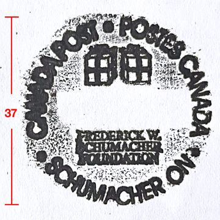
Schumacher POVersion 1Expired · ?–?- Schumacher POVersion 2Expired · ?–?
 Toronto STN AtriumToronto cityscapeExpired · ?–2024
Toronto STN AtriumToronto cityscapeExpired · ?–2024 Toronto Station KVersion 1Expired · ?–2025
Toronto Station KVersion 1Expired · ?–2025 Wiarton PO1st WillieExpired · 2014–2025
Wiarton PO1st WillieExpired · 2014–2025
Other provinces and territories: Alberta · British Columbia · Manitoba · New Brunswick · Newfoundland and Labrador · Nova Scotia · Prince Edward Island · Quebec · Saskatchewan · Northwest Territories · Nunavut · Yukon